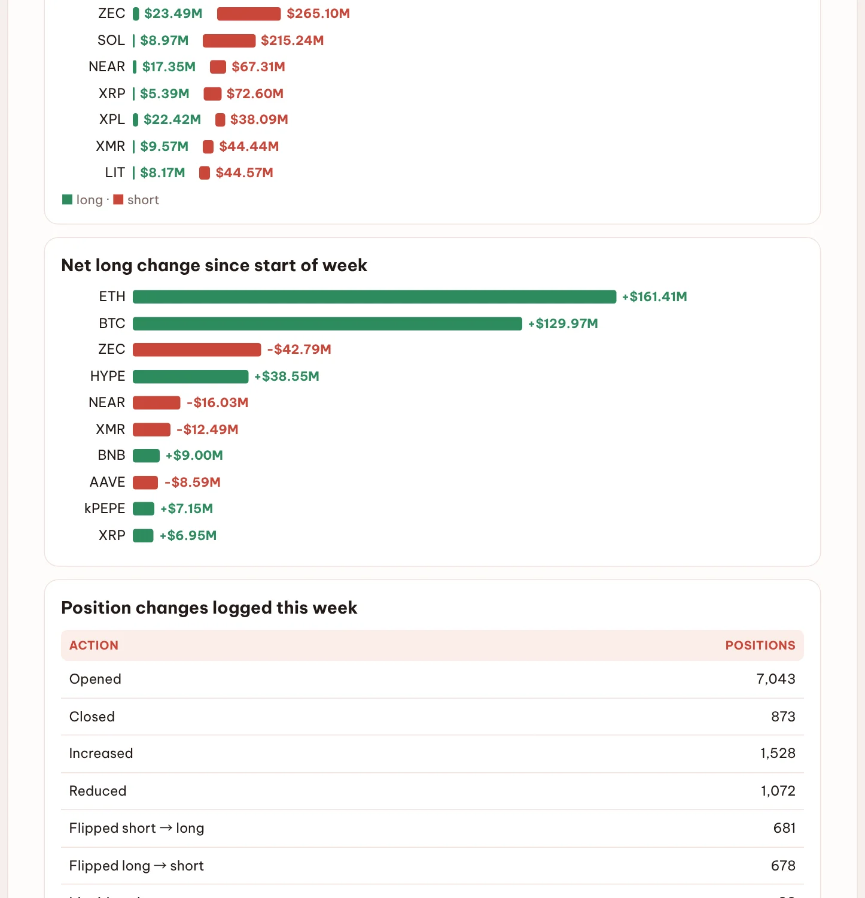
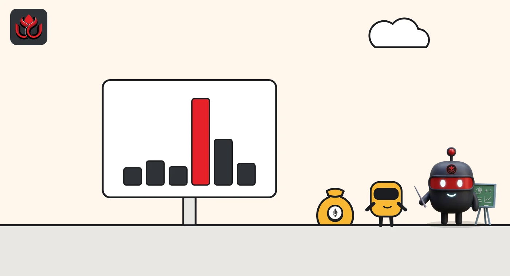

MachiBigBrother opened $145,405 of ETH longs in 25 seconds, six hours after the last burst
DeepSea's live feed caught the crypto influencer opening six ether long positions on Hyperliquid at 6:33 a.m. ET, after nine more just past midnight.
Key points
- From 6:32:57 to 6:33:22 a.m. ET on November 4, 2026, crypto influencer (KOL) MachiBigBrother opened six ETH long positions on Hyperliquid worth $145,405 (62.27 ETH), DeepSea's live feed shows.
- The biggest single order was 25.15 ETH, worth $58,740.
- Just after midnight, the same account opened nine ETH longs worth $177,968, so the two bursts total about $323,000.
 What DeepSea's data shows
What DeepSea's data shows
DeepSea's KOL tracker follows trades by known crypto influencers (KOLs). Its live feed, read by LC Insight at 6:35 a.m. ET on November 4, 2026, lists six orders by the account DeepSea names MachiBigBrother on Hyperliquid, a perpetual futures exchange (contracts with no expiry date). Each was marked "Open Long" on ETH, a bet that ether's price rises.
The six orders came in 25 seconds, from 6:32:57 to 6:33:22 a.m. ET. Together they added 62.27 ETH, worth $145,405. The feed values them at about $2,334 to $2,335 per ETH.
This was the second burst of the day. Between 12:37 and 12:39 a.m. ET, DeepSea showed the same account opening nine ETH longs worth $177,968 (77.6 ETH), as LC Insight reported. Combined, that is about 140 ETH and $323,000 of new long exposure in two short windows.

Data: DeepSea (desea.io), checked November 4, 2026, 6:35 a.m. ET.
Order by order
Open long 4.98 ETH ($11,636)
Open long 7.13 ETH ($16,660)
Open long 5.34 ETH ($12,466)
Open long 25.15 ETH ($58,740)
Open long 13.33 ETH ($31,126)
Open long 6.33 ETH ($14,777)
The numbers
Dollar value of each opening order, from DeepSea's live feed. CoinGecko showed ETH at $2,332.34 at 6:39 a.m. ET, up 3.1% in 24 hours.
MachiBigBrother ETH long openings, 6:32 to 6:33 a.m. ET, November 4, 2026
US$ thousand
Source: DeepSea live feed, fetched November 4, 2026, 6:35 a.m. ET.

What the feed does not show
Splitting one position into many small orders is common on order-book exchanges. The feed shows only openings. It does not show leverage, stop levels, closes or profit, and DeepSea gives no reason for the trades. MachiBigBrother does not appear in DeepSea's 30-day realized profit table for tracked wallets, so we cannot say how these bets have worked out before.
For wider context, DeepSea's weekly report for October 26 to November 1 showed tracked Hyperliquid traders holding $116.23 million of ETH longs against $842.41 million of shorts, with net ETH long exposure up $161.41 million over the week.
Why it matters
KOL trades get copied. A public, timestamped record of what an influencer actually opens is more useful than what they post. It is still one account's bet, not a signal about where ether goes next. Readers who see a KOL's long should remember that the same feed may later show a close at a loss, and that leverage on perpetual futures can wipe out a position fast.
LC Insight analysis
This section is our reading of the facts above, not a statement of fact.
- We think the pattern matters more than the size: two bursts of quick ETH long openings six hours apart point to a position being built in steps, though the feed cannot show the total size or leverage.
- Ether rose about 3% in the day before the second burst, so these longs were opened into strength, not after a dip.
- The feed shows openings, not leverage or exits, so nobody watching from outside can judge how much risk this account is taking.
What's next
- Whether DeepSea's feed shows MachiBigBrother closing or adding to the ETH longs
- ETH price moves around $2,335, the level of the 6:33 a.m. orders
- The next weekly Hyperliquid positioning numbers from DeepSea
Disclaimer. This article is based on public information and the sources listed below as of the update time shown. It is for information only and is not investment, legal or tax advice. Figures may change as companies and authorities publish new data.
Sources
- DeepSea, KOLs live feed, Hyperliquid trades by MachiBigBrother (fetched November 4, 2026, 6:35 a.m. ET)
- DeepSea, Weekly Smart Money & Global Money Flows Report, October 26 to November 1, 2026 (Hyperliquid: positioning; read November 4, 2026)
- CoinGecko, Ethereum (ETH) price (November 4, 2026, 6:39 a.m. ET)